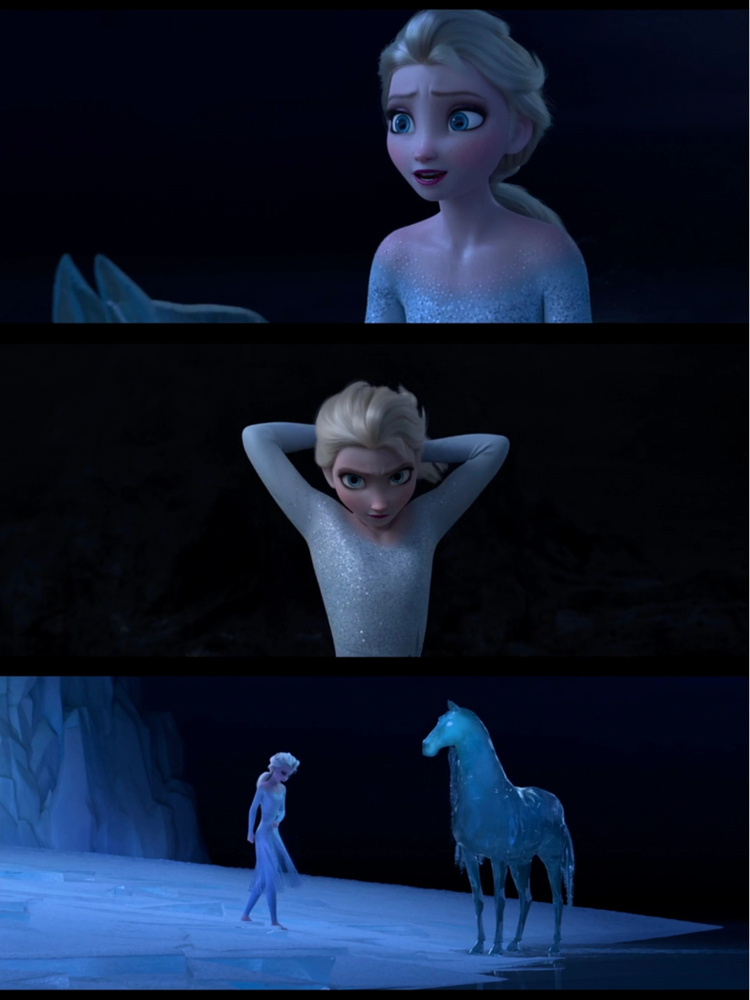
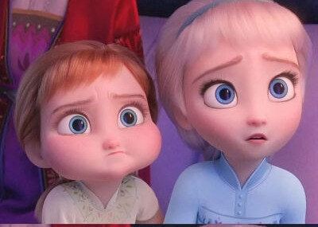

魔法的起源 · 一份血脉的礼物
📖 这一页讲什么
艾莎的魔法从何而来？这一页综合官方设定集与《All Is Found》《Dangerous Secrets》，梳理魔法并非「诅咒」而是「礼物」的线索，以及它与魔法森林、与母亲 Iduna 的血脉关联。


🎁 与生俱来的礼物
在官方正典里，艾莎是「生来就有魔法」的——不是被诅咒，而是被选中。设定集明确把她的力量定位为天赋，而非外来的诅咒。童年那次意外，只是让这份天赋提前、失控地显现。
🌿 All Found 的揭示：母亲的血脉
《All Is Found》与《Dangerous Secrets》补完了关键背景：母亲 Iduna 同样与北方的魔法有着深刻联系——她曾救下少年 Agnarr（艾莎的父亲），而这份「救赎」把艾莎的血脉与魔法森林、与自然之灵绑在了一起。艾莎的冰雪，是这份跨代羁绊的回响。
🧊 为什么是「冰雪」
冰雪在故事里是隐喻：寒冷对应「被压抑的情感」。艾莎越害怕自己，魔法越冷、越失控；当她学会接纳，冰雪不再是武器，而是可以造宫殿、救森林的创造之力。
🚫 不是诅咒，是恐惧
《Conceal, Don't Feel》里所谓「诅咒」，其实是艾莎自己的恐惧投射。魔法本身从不可怕——可怕的是「不敢做自己」的那十几年。
🌉 F2 的终极揭示：第五元素精灵
F2 最终揭示：艾莎的魔法并非随机的天赋，而是她作为「第五元素精灵」的身份标志。魔法森林里有四种自然之灵对应地水火风（大地巨人、水马 Nokk、火蜥蜴 Bruni、风灵 Gale），而「第五元素」是连接这些精灵与人类世界的桥。艾莎，作为拥有冰雪魔力的人类，正是这座桥。她的冰雪之力，本质上是「自然之力」的一种表现——她不是「被赐予魔法的人类」，而是「以人类形态存在的自然之灵」。这个揭示把艾莎的魔法从「个人天赋」提升到了「宇宙级身份」的高度。
👩 母亲 Iduna 的关键角色
《Dangerous Secrets》详细补完了 Iduna 的故事：她是北地人，在那场导致森林被封印的战斗中救下了少年 Agnarr。她隐瞒了自己的北地身份，嫁给了 Agnarr，成为阿伦黛尔的王后。艾莎的魔法正是来自母亲的北地血脉——Iduna 与魔法森林的羁绊，通过血脉传给了艾莎。《All Is Found》中 Iduna 的歌声（「Where the north wind meets the sea, there's a river full of memory」）正是连接艾莎与北地、与魔法森林的线索。在《Show Yourself》中，艾莎终于听见母亲的声音，认出自己的血脉归属——「You are the one you've been waiting for」（你就是那个你一直等待的人）。
💫 魔法起源的主题意义
艾莎魔法的起源故事，本质上是一个「身份认同」的故事。F1 中，她不知道自己为什么有魔法，所以把它当成「诅咒」；F2 中，她终于知道自己的魔法来自母亲的血脉、来自与自然的羁绊，所以把它当成「礼物」。从「诅咒」到「礼物」的转变，就是从「自我厌恶」到「自我接纳」的转变。魔法的起源不是一个「设定问题」，而是一个「存在问题」——我是谁？我为什么是这样的我？艾莎的答案是：我是第五元素精灵，我是自然与人类的桥，我是母亲血脉的延续。这个答案让她终于能够坦然地做自己。
